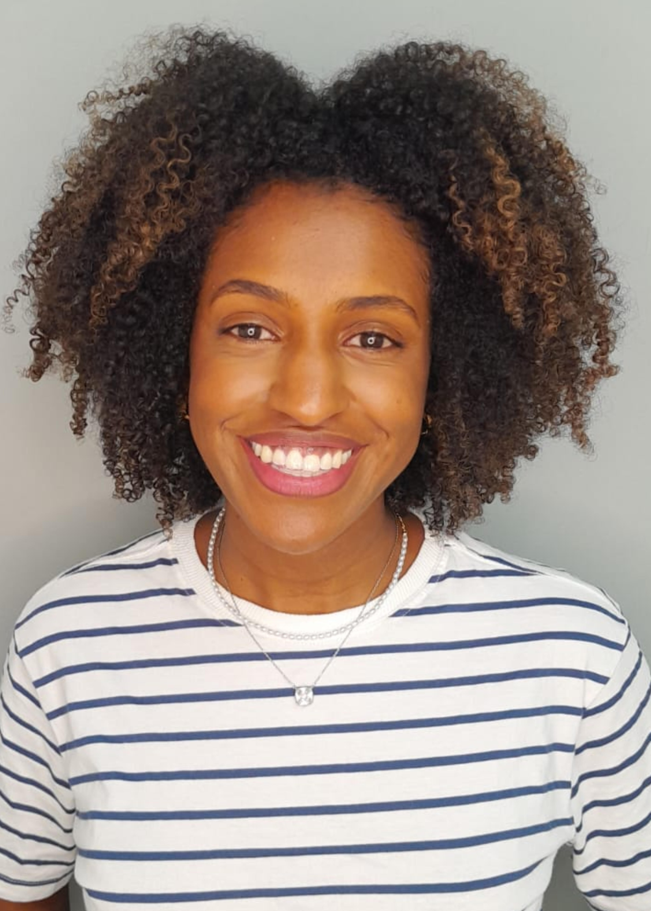

Ao ensinar Matemática na educação básica, podemos nos deparar com questionamentos por parte dos discentes sobre a utilidade ou aplicação prática dos temas estudados. Esses questionamentos podem indicar a necessidade de utilizar abordagens em sala de aula que mostrem a Matemática de forma integrada ou sua relação com outras áreas do conhecimento. Isso pode ser feito ao ensinarmos tópicos da Matemática numa perspectiva interdisciplinar, no intuito de expor a relevância de conteúdos matemáticos associados a temáticas de outras disciplinas e também provocar o interesse dos estudantes para o estudo da Matemática. Concordamos com (Silva 2021) quando se afirma que a interdisciplinaridade vai permitir uma melhor compreensão de fenômenos e problemas complexos, além de contribuir para a redução da “fragmentação do conhecimento e a limitação das disciplinas básicas, ao estimular o diálogo entre diferentes campos e perspectivas”.
Neste trabalho, que resume a pesquisa desenvolvida na dissertação de mestrado de Maiara Santos pelo PROFMAT, Programa de Mestrado Profissional em Matemática em Rede Nacional, sob a orientação do professor Vinícius Mello, a Arte surge como uma motivadora para o ensino e a aprendizagem da Matemática. A escolha pela área das artes visuais se deu pela possibilidade de associá-la ao conhecimento matemático através da geometria. Acreditamos que as artes visuais podem contribuir para a percepção da Matemática como parte do cotidiano e como produção humana, além de funcionar como ponto de partida para discussões mais empíricas sobre o conhecimento matemático na sala de aula. Como bem resumido por (Mendes 2012),
Ao longo da sua existência, a sociedade humana construiu uma variedade cultural que se manifesta por meio de atividades relacionadas à arte e que podem ser interpretadas como uma aplicação de conceitos e técnicas geométricas, principalmente aquelas cujos princípios geométricos são centrais na construção de um desenho ou projeto artístico.
Dentro das artes visuais, podemos observar a presença da matemática com diferentes níveis de complexidade e intencionalidade. Existem movimentos artísticos que de forma intencional utilizam os conceitos matemáticos e a abstração por eles fornecida, juntamente com uso das cores, para expressar ideias em obras de arte. Chamaremos a organização das cores e conceitos geométricos observados nessas pinturas de composição geométrica. Assim, nos interessa estudar a influência que essas composições podem ter no ensino de conteúdos matemáticos.
Quanto a presença da matemática no cotidiano do estudante, resolvemos desenvolver uma proposta interdisciplinar tendo como meio de desenvolvimento um software livre de geometria dinâmica, o GeoGebra. As ferramentas tecnológicas fazem parte do dia a dia da nossa sociedade e existem metodologias que incentivam o uso de diferentes tecnologias em sala de aula. Acreditamos que as ferramentas tecnológicas podem ser grandes aliadas no ensino de matemática, quando utilizadas de forma organizada, didática e com viés pedagógico, visando os processos de ensino e de aprendizagem.
O tema da nossa pesquisa, Composições Geométricas no GeoGebra, surge, portanto, da percepção que realizar uma pesquisa envolvendo geometria, arte e tecnologia para a educação básica poderia trazer bons resultados relacionados ao ensino de matemática. Nessa perspectiva, com o intuito de unir matemática, arte e tecnologia, construímos a seguinte questão de pesquisa: de que forma o uso de composições geométricas, aliadas à tecnologia, pode favorecer o ensino de conteúdos matemáticos geométricos?
Assim, nosso objetivo de pesquisa é analisar as contribuições para estudantes do ensino médio de sequências didáticas sobre composições geométricas no GeoGebra para o ensino de conhecimentos geométricos. Neste artigo para a Revista de Matemática Hipátia, resumiremos nossa pesquisa, começando por delinear o conceito de “composição geométrica”, através de seus princípios, elementos, desenvolvimento histórico e principais expoentes, e terminando com a descrição de sua metodologia, execução e resultados.
O termo composições geométricas ocupa o centro das discussões, por ser o fator de interdisciplinaridade entre Matemática e Arte que gera os nossos estudos. Estamos explorando a potencialidade das composições geométricas para mostrar a matemática existente em obras de arte e é necessário compreendermos o que essa expressão significa. Iniciaremos tentando compreender o que o termo ‘composição’ significa nas artes visuais.
Ao buscarmos em dicionário, a palavra composição apresenta vários significados, dos quais enfatizamos: “Ação ou efeito de compor, formar um todo. Disposição do que constitui um todo; constituição. Maneira como algo está ou se encontra disposto; organização. [Artes Plásticas] Constituição ou desenvolvimento da estrutura da obra de arte” (“DICIO - Dicionário Online de Português” n.d.). No contexto da nossa pesquisa, adotamos uma definição inspirada pela dada em (Cohen and Anderson 2006): composição é a organização dos elementos visuais para comunicar uma intenção. A palavra-chave aqui é intenção, pois a organização dos elementos visuais não é aleatória, mas sim planejada pelo artista para expressar sentidos, emoções, sensações e, no caso das composições geométricas, conceitos matemáticos.
Para completar essa definição, entretanto, precisamos entender o que são precisamente os elementos visuais e em que princípios se baseia essa organização. Como não há um consenso na literatura sobre quais sejam esses elementos e princípios, até pela dificuldade de se estabelecer definições precisas para conceitos tão subjetivos, optamos por adaptar definições encontradas em (Dondis 2003) e (Gatto, Porter, and Selleck 1987) para o nosso contexto.
Os elementos da composição são:
É considerada o elemento fundamental da composição, definida como o rastro de um ponto em movimento. As linhas podem ser retas, curvas, finas ou grossas e servem para criar movimento, dar direção e guiar o olhar do espectador através da obra.
Refere-se a espaços fechados criados quando linhas se encontram ou áreas de cor e textura se intersectam. Elas podem ser geométricas (como quadrados e círculos) ou orgânicas (semelhança com seres vivos). Na composição, a forma serve como um elemento unificador que vincula os outros componentes.
É a técnica de fazer objetos parecerem tridimensionais em uma superfície plana. Isso é alcançado através do uso de perspectiva, luz e sombra, criando a ilusão de profundidade. No espaço real, como na escultura, o volume é tangível, enquanto na pintura ele é uma representação visual de massa e peso que influencia o equilíbrio da composição.
É um dos elementos mais expressivos, capaz de criar harmonia, contraste e profundidade sem o uso de palavras. A cor atrai a atenção para partes específicas da obra e atua como símbolo ou metáfora (ex: azul para serenidade, vermelho para paixão). O efeito de uma cor é sempre relativo à sua situação em relação às cores vizinhas.
Refere-se ao grau de claridade ou obscuridade de uma cor ou superfície. É essencial para criar contraste e profundidade, permitindo que o artista destaque pontos de luz intensa ou sombras profundas. O valor dá à pintura seu senso de realismo e dimensão.
Diz respeito à qualidade da superfície ou à sensação tátil de um objeto, podendo ser percebida visualmente ou sentida fisicamente. Ela adiciona uma dimensão sensorial à composição.
Refere-se às áreas ao redor e entre os objetos. Inclui o espaço positivo (ocupado pelos elementos principais) e o espaço negativo (as áreas abertas ao redor deles). O espaço é vital para definir limites, escala e criar ênfase na composição. Em artes monumentais, o espaço também envolve o movimento físico do espectador para apreciar a obra de diferentes pontos de vista.
Estes elementos estão ilustrados na Figura [fig:ElComp], que foi produzida utilizando apenas recursos do GeoGebra.
Já os princípios da composição estão ligados à forma como os elementos visuais se relacionam para criar uma obra coesa e expressiva. São eles:
O equilíbrio refere-se à distribuição igualitária de elementos visuais dentro de uma composição. Ele é essencial para conferir estabilidade e unidade à obra, podendo ser alcançado de dois modos principais: simétrico, quando as partes são organizadas de forma idêntica ou espelhada em relação a um eixo, geralmente vertical, e assimétrico quando elementos diferentes (em peso visual, cor ou forma) são organizados de modo a contrabalançar uns aos outros, criando uma estabilidade sem repetição exata.
Este princípio trata da relação de tamanho entre objetos ou partes de um todo. A proporção é vital para estabelecer harmonia e unidade. Historicamente, artistas utilizaram sistemas matemáticos para garantir proporções “perfeitas”, como a proporção áurea (\(1:\phi\), com \(\phi=\frac{1+\sqrt{5}}{2}\)) e os retângulos de raiz(\(1:\sqrt{2}\), \(1:\sqrt{3}\) etc.) (Fig. 1).
O contraste ocorre quando se percebem diferenças distintas entre dois efeitos comparados. Ele serve para intensificar ou enfraquecer o impacto visual e é crucial para criar hierarquia.
A ênfase é o princípio de tornar certos elementos mais proeminentes para criar um ponto focal que capture a atenção do espectador. Isso é geralmente alcançado através do contraste de cor, valor ou nitidez de bordas.
O movimento é a ilusão de ação dentro de uma composição estática. Ele guia o olhar do espectador através da obra e pode ser gerado pela repetição de linhas, curvas ou diagonais.
O ritmo é criado pela repetição de elementos visuais (como cores, formas ou linhas) para produzir um senso de fluxo e energia. Ele funciona de forma análoga à música, apresentando uma sucessão de valores no tempo e no espaço. O ritmo ajuda a organizar o olhar do observador, podendo evocar sentimentos de calma ou excitação.
A unidade refere-se a como todos os elementos são colocados juntos para criar um senso de ordem e completude. A geometria é frequentemente a ferramenta usada para conferir essa unidade estrutural invisível à obra.
Esses princípios serão referenciados ao longo do artigo quando discutirmos as composições apresentadas.
Até o início do século XX, a composição geométrica era um recurso utilizado principalmente na fase preparatória de obras artísticas, através de esboços e estudos. Em seu monumental tratado La Géometrie Secréte des Peintres (“A Geometria Secreta dos Pintores”, (Bouleau 2014)), o pintor e teórico Charles Bouleau analisa centenas de obras de arte, desde a antiguidade até o século XX, e demonstra como os artistas utilizavam recursos geométricos para estruturar suas composições. Traremos apenas dois exemplos dessa prática, retirados do livro de Bouleau.
O primeiro exemplo é a pintura A Deposição da Cruz, de Rogier van der Weyden (Fig. [fig:descenso]). Bouleau observa que o quadro possui um formato incomum, assemelhando-se a um tríptico amalgamado em um único bloco, mantendo a simetria e a composição ternária herdada dos retábulos de abas. A construção da moldura baseia-se em um retângulo de proporção \(1: \sqrt{3}\) (Fig. 1), mas o que mais chama a atenção é a complexa estrutura geométrica que organiza a cena central. O coração da composição, segundo o autor, é organizado por meio de um complexo jogo de figuras geométricas. Existem três círculos de mesmo raio, dois deles tangenciais às bordas laterais e ao topo, e o ponto de intersecção entre eles serve como centro para um terceiro círculo central. Dentro desses círculos, van der Weyden inscreveu pentágonos. Bouleau afirma que as diagonais desses pentágonos conferem vigor e arquitetura às formas, que de outra forma pareceriam apenas um “redemoinho” de corpos. Bouleau ressalta que, apesar desse rigor matemático, a obra atinge um equilíbrio perfeito entre a geometria e a emoção. O efeito dramático é intensificado pelas curvas dos corpos suplicantes, que se inclinam em direção a dois polos principais: o Cristo e a Virgem Maria. As diagonais e os eixos não são apenas auxílios de harmonia, mas o objetivo artístico acentuado, onde o “humano se sujeita às exigências da geometria”.
O outro exemplo, com uma composição bem mais simples, é a pintura Lição de Anatomia do Dr. Tulp, de Rembrandt (Fig. 2). Bouleau descreve-a como sendo estruturada a partir de um esquema que utiliza quatro pontos, um em cada lado da pintura. A partir desses pontos, são traçadas linhas inclinadas em direção aos cantos da obra, formando dois pares de linhas paralelas. Esse arranjo resulta em um paralelogramo que é dividido por uma diagonal em dois triângulos iguais. Dentro dessa organização geométrica, Rembrandt agrupa os retratos dos assistentes no triângulo superior. Já o cadáver ocupa quase todo o espaço do triângulo inferior. Essa estrutura oculta permite a Rembrandt sacrificar detalhes secundários para enfatizar o centro de interesse através da luz, uma técnica que o autor compara ao trabalho de um diretor de cena, com os triângulos direcionando o olhar do espectador dos assistentes para o o dr. Tulp e para o cadáver.
A partir do século XX, em parte devido ao impacto da fotografia e do cinema, mas também graças a busca de novas formas de expressão artística, a composição geométrica deixa de ser um recurso utilizado apenas na fase preparatória das obras e passa a ser o foco principal de diversos movimentos artísticos. Por exemplo, em Círculos em um Círculo, de Wassily Kandinsky (Fig. 3), a composição é inteiramente baseada em formas geométricas e cores, organizadas de forma a criar equilíbrio, movimento e ritmo, sem qualquer representação figurativa.
Kandinsky, além de ser um dos pioneiros da arte abstrata, foi professor na Bauhaus, escola alemã que funcionou por 14 anos (de 1919 a 1933, até ser fechada pelo regime nazista) e deixou contribuições no que diz respeito a arte, mais especificamente a arte concreta, na arquitetura e no design que reverberam até os dias atuais. Em seus fundamentos, utilizava-se da abstração geométrica a partir dos elementos básicos da composição visual, sendo referência para o design contemporâneo.
Um exemplo é o cartaz de uma exposição da Bauhaus, feita pelo artista Fritz Schleifer (Fig. [fig:bauhaus]), seguindo os princípios construtivistas que eram defendidos pela Bauhaus. Elam explica em (Elam 2007) que o cartaz apresenta um rosto humano que é representado de forma abstrata através de cinco formas geométricas retangulares, uma simplificação do emblema da Bauhaus concebido pelo artista Oskar Schlemmer, e que há um alinhamento entre o quadrado que representa um olho e o eixo vertical, mas os demais elementos estão organizados de forma assimétrica em relação a esse eixo. Além disso, percebemos que as formas geométricas estão pintadas com as cores primárias vermelho e azul.
Após a Segunda Guerra Mundial, outra escola influente de design foi criada na Alemanha: a HfG Ulm (Hochschule für Gestaltung Ulm, ou Escola Superior de Design de Ulm), fundada em 1953 por ex-integrantes da Bauhaus. Vamos citar três expoentes dessa escola que contribuíram para o desenvolvimento da composição geométrica no design.
O primeiro deles é o arquiteto e designer Max Bill (1908–1994), que foi aluno da Bauhaus e um dos fundadores da HfG Ulm. Bill defendia uma arte baseada na razão e na clareza, utilizando formas geométricas simples e cores primárias para criar composições equilibradas e harmoniosas. Seu trabalho influenciou o design gráfico, industrial e arquitetônico. Um exemplo de seu trabalho está em uma das sequências didáticas que desenvolvemos.
O segundo nome é Johannes Itten (1888–1967), que também foi professor na Bauhaus e teve influência significativa no desenvolvimento da composição geométrica. Itten foi um dos primeiros a ensinar a teoria da cor e a composição geométrica na Bauhaus, e suas ideias foram fundamentais para o movimento construtivista. Em seu livro The Elements of Color (Itten 1970), Itten aborda a teoria estética da cor, resultados de anos de estudo sobre o tema. Ele discute a existência da harmonia das cores que surge a partir do relacionamento entre um conjunto de matizes. Assim como existe o equilíbrio na disposição desses elementos, há arranjos que não harmonizam e podem ter o sentindo provocativo. A posição, a proporção, o grau de pureza e o brilho são determinantes para a mensagem que se pretende passar em uma composição visual:
Uma cor particular incita o olho, por uma sensação específica, a buscar a generalidade. Para, então, buscar essa totalidade, para se satisfazer, o olho busca, além de qualquer espaço de cor, um espaço incolor onde produzir a cor ausente. Aqui temos a regra fundamental de toda harmonia cromática.
Ele desenvolveu o círculo cromático (Fig. 4), que é um fundamento indispensável ao tratarmos de teoria estética da cor.
O terceiro nome é Hermann von Baravalle (1898–1973). Convidado por Max Bill e Inge Scholl, Baravalle atuou como professor convidado regular na hfg Ulm entre 1954 e 1968, integrando o Grundlehre (Curso Básico). Sua “marca” pedagógica em Ulm foi o ensino da Geometria Dinâmica, onde as formas não eram estáticas, mas vistas como o resultado de tensões e transformações originadas pelo movimento (Fig. 5). Diferente da geometria descritiva tradicional, focada apenas na representação de objetos, Baravalle propunha a geometria como um idioma visual (Roldán 2016).
Antes de sua atuação em Ulm, Baravalle fora um dos pioneiros do Movimento Waldorf, tendo sido escolhido pelo próprio Rudolf Steiner — filósofo e pensador austríaco que desenvolveu a Pedagogia Waldorf, um método educacional baseado na Antroposofia — para integrar o corpo docente da primeira escola em Stuttgart, em 1920. O objetivo central de Baravalle em ambas as instituições era “reativar o sentido geométrico”. Ele acreditava que, ao ensinar os alunos a descobrir as leis matemáticas por meio da percepção direta e do desenho manual, eles se tornariam criadores mais conscientes e autônomos.
A influência da Escola de Ulm no Brasil foi profunda e estruturante, atuando como um catalisador para a modernização do design gráfico, da arte e do ensino superior no país a partir da década de 1950. O ponto de partida histórico dessa influência ocorreu em 1951, quando a escultura “Unidade Tripartida” de Max Bill foi premiada na Primeira Bienal de São Paulo, tornando-se o marco de apoio para o movimento concretista brasileiro ao introduzir o rigor matemático e o anti-romantismo na produção nacional. No campo educacional, a Escola de Ulm serviu de modelo direto para a criação da ESDI (Escola Superior de Desenho Industrial) no Rio de Janeiro, em 1963, a primeira instituição a oferecer um curso de design em nível superior no território brasileiro (Fuchs 2016).
A influência também se manifestou através de figuras individuais, sendo Alexandre Wollner, pioneiro do design gráfico no Brasil, o caso mais emblemático (Fig. 6); após estudar em Ulm a convite de Max Bill, Wollner retornou ao Brasil e fundou o escritório Forminform, consolidando o uso do grid e do rigor estrutural em marcas icônicas como Elevadores Atlas e Banco Itaú (Mizanzuk 2015).
Outro nome brasileiro a ser citado é o de Luiz Sacilotto, que embora não tenha estudado diretamente em Ulm, foi fortemente influenciado por Max Bill e pelo Concretismo de Theo van Doesburg, que é relacionado aos ideais da Bauhaus (Fuchs 2016). Sacilotto foi um dos pioneiros da Arte Concreta no Brasil e uma de suas obras é tema de uma de nossas sequências didáticas.
Fora da Europa e do Brasil, outro nome importante no contexto da composições geométricas de caráter mais matemático é o de Crockett Johnson (pseudônimo de David Johnson Leisk). Seu trabalho representa uma interseção única entre a arte e a matemática, fruto de uma “odisseia” iniciada nos últimos dez anos de sua vida (1965–1975) (Stroud 2008). Johnson dedicou-se a criar pinturas abstratas que documentam marcos matemáticos históricos e investigações próprias. Johnson executou suas pinturas em um estilo de bordas rígidas (hard edge) e massa plana, utilizando cores que focavam em intensidade ou contraste para destacar o sentido dos teoremas. Seu objetivo era retratar a beleza oculta da matemática sem o uso de símbolos, equações ou palavras, permitindo que as formas geométricas falassem por si mesmas (Fig. [fig:reciproc], acima).
A origem de nossa pesquisa foi um trabalho final, unindo arte e geometria, que o segundo autor (Vinícius) propôs aos alunos da disciplina Geometria Euclidiana Plana no início de 2024. Foi neste momento que conhecemos os trabalhos de Crockett Johnson e Max Bill. Após um pouco de experimentação, ele percebeu que o GeoGebra tinha todos os recursos necessários para reproduzir boa parte das obras desses autores (Fig. [fig:reciproc], abaixo), e perguntou a primeira autora (Maiara) se ela gostaria de trabalhar com esse tema em sua dissertação de mestrado. Ela aceitou e iniciou a pesquisa que resumiremos a seguir (continuaremos a usar a primeira pessoa do plural no texto, mas a pesquisa foi conduzida de forma bastante autônoma pela primeira autora).
A fim de responder nossa pergunta inicial, definimos que a nossa pesquisa teria caráter qualitativo, o qual permite a observação, compreensão e análise dos sujeitos interagindo com os conhecimentos pretendidos, em busca de entender os processos que os levam aos resultados e não apenas focar nos resultados finais (Bogdan and Biklen 2003). Quanto aos objetivos do estudo, classificamos a pesquisa como exploratória, já que concordamos com Lunetta e Guerra (Lunetta and Guerra 2024) sobre esse tipo de pesquisa ser utilizado quando se pretende aprofundar os conhecimentos sobre o conteúdo pesquisado, permitindo desenvolver hipóteses e maior especificidade no que se conhece sobre o tema.
Após um período de estudo e planejamento, formulamos os seguintes objetivos específicos:
Desenvolver sequências didáticas que utilizem composições geométricas para o ensino de conteúdos matemáticos;
Apresentar o desenvolvimento de uma oficina sobre Composições Geométricas com o auxílio do GeoGebra;
Investigar a percepção dos estudantes sobre as sequências didáticas e sobre a oficina;
Entender a viabilidade do ensino de conteúdos matemáticos a partir da interdisciplinaridade com a arte.
O local escolhido para a realização da pesquisa foi um Colégio Estadual situado na zona urbana da cidade de Seabra-Bahia, onde a pesquisadora exerce a docência. Ele atende majoritariamente estudantes do Ensino Médio, Ensino Médio Técnico e Educação de Jovens e Adultos (EJA), funciona nos turnos matutino, vespertino, noturno e integral e possui um polo da Universidade Aberta do Brasil (UAB), que oferece cursos de graduação e pós-graduação. Solicitamos à coordenação o uso do laboratório de informática UAB, localizado no interior da escola estadual, pois optamos em desenvolver as atividades em computadores, ao invés de celulares ou tablets. Fizemos essa opção metodológica por entendermos que os computadores proporcionariam melhor visualização das construções e seus detalhes. No momento da visita inicial ao laboratório, havia 12 computadores com bom funcionamento e decidimos limitar o número de participantes à quantidade de máquinas. A direção escolar e a coordenação da UAB Seabra-BA assinaram as respectivas declarações de anuência, concedendo a permissão para a realização da pesquisa.
Sabendo com precisão o local de aplicação que a pesquisa seria desenvolvida — o laboratório de informática — foi possível definir os convidados para a realização da oficina. Decidimos convidar estudantes que tivessem disponibilidade para estar na escola no turno oposto ao que estudavam e assim surgiu a oportunidade de convidar os participantes do Clube de Ciências da escola (MegamenteCES), os quais já frequentavam a escola no turno oposto para reuniões.
Como o quantitativo do público esperado não havia sido atingido estendemos o convite para estudantes de uma turma de quarto semestre de Licenciatura em Matemática à distância, pertencente à UAB — Seabra, e uma manifestou interesse em participar. No momento do convite, acreditávamos que ter participantes do Ensino Médio e do Ensino Superior traria visões complementares e nos ajudaria na melhor compreensão sobre os efeitos da atividade interdisciplinar no ensino da matemática. Posteriormente, um estudante que cursava a terceira série, mas não fazia parte do clube de ciências, se mostrou interessado em compor o grupo. Dessa forma, o grupo final foi composto por sete estudantes, sendo seis do Ensino Médio e um do Ensino Superior. Todos os participantes assinaram o Termo de Consentimento Livre e Esclarecido (TCLE) para participar da pesquisa.
Quanto ao conteúdo das Oficinas, optamos por nos limitar ao estudo das Transformações Isométricas e ao Teorema de Pitágoras, por serem conteúdos do Ensino Médio que podem ser explorados através de composições geométricas. Transformações Isométricas são transformações que conservam a distância ((Lima 2007)). O ensino de Isometrias está previsto na BNCC do Ensino Médio, inclusive tendo como sugestão a sua utilização para análise de obras de arte:
(EM13MAT105) Utilizar as noções de transformações isométricas (translação, reflexão, rotação e composições destas) e transformações homotéticas para analisar diferentes produções humanas como construções civis, obras de arte, entre outras (Brasil 2017).
Com os conteúdos matemáticos definidos, realizamos a estruturação das sequências didáticas. Elas são iniciadas com o conceito matemático que se pretende trabalhar, para que o estudante comece a refletir sobre a matemática envolvida. Nesse momento pode haver uma conversa sobre o tema entre docente e discentes. Em seguida, há sessões da sequência com as construções propostas. Cada sessão conta com o passo a passo da construção que se pretende realizar no GeoGebra e, prosseguindo, são feitos questionamentos para incentivar que os participantes reflitam sobre o que estão elaborando e sintetizem seus aprendizados. Ao final de cada sessão de construção, há uma sessão chamada “para finalizar” onde são dadas instruções sobre como salvar, exportar ou estilizar a produção.
Sabendo que os estudantes podem não ter familiaridade com o GeoGebra, organizamos uma sessão inicial para que os participantes conheçam o aplicativo com o auxílio da docente responsável. Elaboramos alguns vídeos para apoiar os momentos de prática, sobre: informações iniciais relativas ao GeoGebra; como exportar imagens do GeoGebra para o computador; como modificar as cores no GeoGebra. Ademais, elaboramos e disponibilizamos vídeos sobre os artistas dos quais pretendemos realizar construções das obras de arte, que são: Max Bill, Luiz Sacilotto e Crockett Johnson. O link de cada vídeo está disponível ao longo das sequências didáticas e também na página online organizada para uso durante as oficinas (“Mural Interativo” n.d.).
Foram elaboradas três sequências didáticas com composições geométricas para serem desenvolvidas no GeoGebra. Elas buscam despertar nos participantes o caráter investigativo, contando com o auxílio de um docente que fará a mediação das atividades, mas permitindo que os discentes desenvolvam as atividades seguindo as orientações escritas nas sequências didáticas.
As duas primeiras sequências se complementam, tratando do conteúdo matemático isometrias no plano: a primeira sequência trabalhando com produções que envolvem reflexão e rotação, e a segunda sequência focando no estudo de translações. Para estas sequências didáticas, exploramos tanto construções mais livres em que estudaríamos os conceitos a partir das produções de cada estudante e construções das obras de arte de Max Bill e Luiz Sacilotto. A terceira sequência explora o teorema de Pitágoras e a média geométrica a partir de uma obra do artista Crockett Johnson.
As oficinas ocorreram em três encontros presenciais de duas horas cada, no laboratório de informática, com datas escolhidas em diálogo com os participantes para minimizar ausências. Sete alunos participaram do primeiro encontro (identificados como A, B, C, D, E, F e G); seis no segundo e cinco no terceiro.
No primeiro encontro, após apresentar o mural colaborativo (Fig. 7), contendo todos os materiais de apoio, e o GeoGebra, os alunos iniciaram a sequência didática que consiste das seguinte construções:
Reflexão utilizando comando do GeoGebra;
Rotação utilizando comando do GeoGebra;
Composition Géometrique, 1990, Max Bill
Concreção 8745 de Luiz Sacilotto.
A primeira construção consistia em efetuar reflexões de um polígono em relação aos eixos e à origem. Ao comparar coordenadas, perceberam as mudanças provocadas pelas reflexões e surpreenderam-se ao mover o polígono original e verificar que as imagens refletidas o acompanhavam. O estudante F comentou: “acompanharam a posição do polígono inicial, porém permaneceram invertidos”.
Em seguida, exploraram rotações da obra referencial em \(45^\circ\), \(90^\circ\), \(180^\circ\) e \(270^\circ\) em torno da origem, construindo círculos para destacar a preservação de distâncias. O estudante B observou que “o círculo passa sempre nos mesmos vértices” e a estudante E notou que os círculos passavam por todas as imagens rotacionadas, mesmo ao mover a figura inicial. Por fim, utilizaram controle deslizante para visualizar rotações contínuas em torno da origem e de um vértice.
O segundo encontro focou na reprodução de obras de arte. Após assistir a vídeo sobre Max Bill, os alunos analisaram Composition Géométrique (1990) (Fig. 8). Destacam-se as observações do estudante F — “diversos triângulos unidos em diferentes sentidos” e formação de um quadrilátero central (losango) — e do estudante B — “dividida em 4, cada imagem em ângulo diferente, dá a impressão que está rodando em espiral”. Fragmentos das respostas reforçam a percepção de simetria, repetição de cores e padrões rotacionais de \(90^\circ\).
Os alunos reproduziram um quarto da obra e completaram o restante usando rotações e reflexões. Três participantes (A, B e F) demonstraram maior autonomia; os demais necessitaram de mais apoio, especialmente no manuseio preciso do mouse e na extração de cores RGB.
Ao final, iniciou-se a análise da obra Concreção 8745 de Luiz Sacilotto (Fig. 9), com percepções sobre simetria, harmonia cromática e possibilidade de obter formas inferiores por reflexão.
O terceiro encontro foi dedicado à conclusão da reprodução de Concreção 8745. Os alunos construíram uma parte triangular (oitavo da obra), coloriram-na e completaram o quadrado central azul-amarelo usando reflexões. Para finalizar a obra inteira, empregaram reflexões em relação a segmentos internos. Os estudantes A, B e F atuaram com autonomia; C, D e E requereram maior intervenção da docente. O estudante A, tendo já concluído, criou composição original inspirada nas oficinas (Fig. 10).
O questionário online (Google Forms), intitulado “Questionário sobre as oficinas: composições geométricas no GeoGebra”, foi respondido pelos cinco participantes presentes na última oficina. Composto por 20 perguntas de múltipla escolha e discursivas, buscou investigar perfil tecnológico, percepções sobre tecnologias digitais em aulas de matemática, relação matemática-arte, experiência com o GeoGebra, dificuldades enfrentadas e sugestões sobre as oficinas.
Todos os respondentes declararam ter acesso à internet em casa e na escola, principalmente via smartphone (100%), notebook (80%), tablet (40%) e computador (20%). Quanto à experiência com computadores, todos já possuíam alguma, sendo 60% em nível básico e 40% intermediário.
Os participantes consideraram, de forma unânime, ser importante o uso de tecnologias digitais em aulas de matemática. Destacam-se justificativas como: “tecnologias digitais têm muitas ferramentas que tem forte ligação com a matemática”; “nos ajuda a entender a matemática de maneira dinâmica e didática”; “enriquece as aulas”; “acompanha a evolução que acontece na sociedade atual”. Tais percepções reforçam a contribuição das ferramentas digitais para o engajamento e construção significativa de conceitos matemáticos, conforme aponta Cox em (Cox 2003).
Apenas uma participante (licencianda em Matemática) já havia utilizado o GeoGebra anteriormente, mas todos o consideraram uma boa ferramenta para aprender matemática, destacando: “diversidade de funções”; “aproximação prática com a teoria”; “facilita o aprendizado e demonstra melhor as figuras visualmente”; “oportunidade de conhecer várias formas geométricas através da arte”. Como aspectos mais interessantes, citaram o aprendizado prático e a abordagem via arte.
O grupo concordou que relacionar matemática e arte é uma boa estratégia pedagógica, pois permite explorar criatividade, estudar de forma dinâmica, compreender conexões interdisciplinares e reproduzir processos artísticos. Essa abordagem evidencia a presença da matemática em contextos culturais e sua potencialidade interdisciplinar, corroborando Mendes ao afirmar que atrelar geometria a manifestações artísticas torna o aprendizado mais atraente e significativo, extensão válida também para adolescentes e adultos (Mendes 2012).
Quanto às dificuldades, 60% relataram problemas devido à falta de familiaridade prévia com o GeoGebra ou baixa frequência no uso de computadores, mas enfatizaram a importância das orientações da docente para superar os obstáculos.
Todos aprovaram o formato das oficinas (orientações presenciais, sequência didática impressa e uso de computadores), destacando trechos como: “é como se houvesse um guia”; “metodologia muito boa”; “gostei muito desse formato”; “tivemos autonomia”.
Nos comentários finais, todos foram positivos, elogiando a experiência e sugerindo a inclusão de momento para criações autorais no GeoGebra. Trechos relevantes: “quero levar como conhecimento para aprimorar meus estudos”; “ganhei experiência em novas plataformas digitais”; “aprendi mais sobre a matemática e a arte”; “excelente oportunidade de aprendizado sobre o aplicativo e suas funcionalidades”.
Infelizmente, não foi possível aplicar todas as sequências didáticas planejadas, o que sugere que uma Oficina como esta necessita de mais tempo para ser desenvolvida. O número reduzido de participantes também limitou a abrangência dos resultados, mas, mesmo assim, foi possível perceber que a proposta foi bem recebida pelos estudantes e que eles conseguiram compreender os conceitos matemáticos trabalhados. Acreditamos que a interdisciplinaridade entre matemática e arte, aliada ao uso de tecnologias digitais, pode ser uma estratégia eficaz para o ensino de conteúdos matemáticos, como as transformações isométricas. Esperamos que este trabalho incentive outros educadores a explorar essas conexões em suas práticas pedagógicas.

Maiara Santos é soteropolitana e reside na cidade de Seabra-BA. É especialista em Educação Matemática e atua principalmente em turmas de ensino médio. Além de ser apaixonada por Dança e Literatura, é encantada pela versatilidade da Geometria e com o seu potencial artístico. Por isso, sempre se utiliza de alguma conexão entre Matemática e Arte em suas aulas.
Vinícius Mello nasceu em Salvador e obteve seu doutorado em Computação Gráfica no IMPA. Ensina matemática na UFBA e fica alegre sempre que pode usar o GeoGebra em suas aulas. Gosta de matemática, música e programação em exata proporção, podendo ser encontrado a (quase) qualquer momento fazendo ao menos uma dessas coisas.